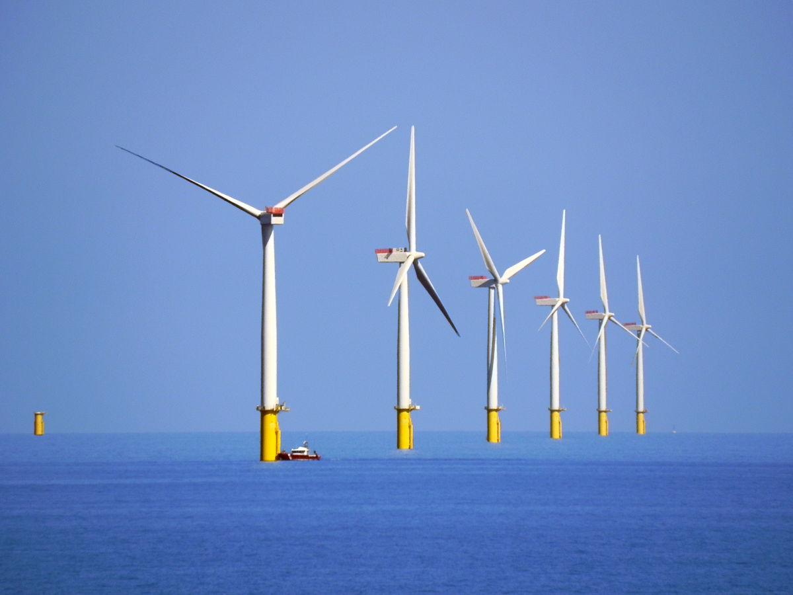
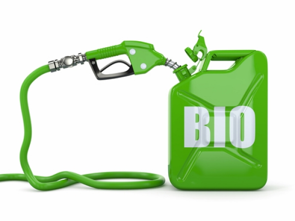
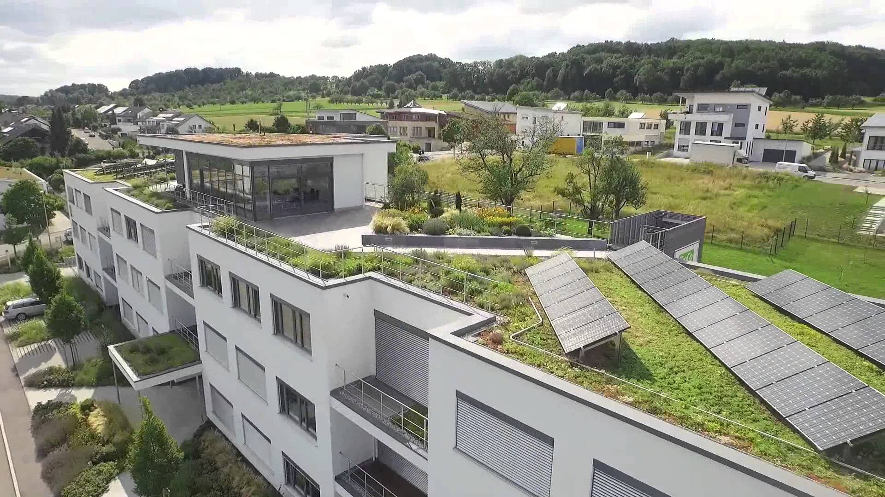

©2017 Universitatea Titu Maiorescu
Dumitru Marius-Daniel - Administrarea afacerilor
"Atunci cand solul dispare, sufletul dispare"
- Ymber Delecto
Walney Offshore este un parc eolian dezvoltat de compania daneza DONG Energy în vestul Marii Britanii si
a fost desemnata cea mai profitabila afacere "verde". Acesta se deosebeste de celelalte parcuri eoliene prin faptul ca este amplasat în mijlocul marii si prin faptul ca este cel mai mare parc eolian din lume, având 102 turbine la care se vor adauga înca 51 în urmatorii ani (acesta are capacitatea de a alimenta 320.000 de locuinte cu energie electrica). În 2010 aceasta companie a obtinut venituri de aproximativ 15 miliarde de dolari si în 2011 acestea au crescut cu 59% fiind considerata cea mai profitabila companie ce actioneaza în acest domeniu.
În anul 2011 compania desemnata pe primul loc este Uptown Oil din Londra, Marea Britanie,
aceasta companie a dezvoltat un întreg sistem 100% ecologic prin care produce bio-diesel si ulei din floarea soarelui. Sistemul se bazeaza pe colectarea uleului alimentar folosit în locuinte si restaurante (în mare parte este uleiul pe care îl produc - sistem buy back) si producerea de bio-diesel 100% ecologic care ajunge în rezervoarele utilajelor cu care lucreaza propriile culturi de floarea soarelui, însa o mare parte din bio-dieselul produs este vândut. Clientul principal al companiei este cea mai mare companie de taxi din Londra si piata acestei companii este în continua crestere.
Acoperisurile verzi câstiga tot mai mult teren în arhitectura moderna si nu sunt doar o tendinta
estetica, ci prezinta în acelasi timp avantaje economice si ecologice de necontestat. În Germania, în acest moment, 10% din totalul acoperisurilor sunt verzi, iar în Elvetia normele legislative impun ca orice acoperis nou construit, mai mare de 500 de mp, sa fie realizat utilizând un astfel de sistem. În România piata este înca emergenta, iar companiile ce actioneaza în acest sector sunt relativ putine, ceea ce poate înseamna ca înca mai exista oportunitatea patrunderii pe piata dar si faptul ca cererea pentru astfel de constructii este scazuta datorita structurii cladirilor.